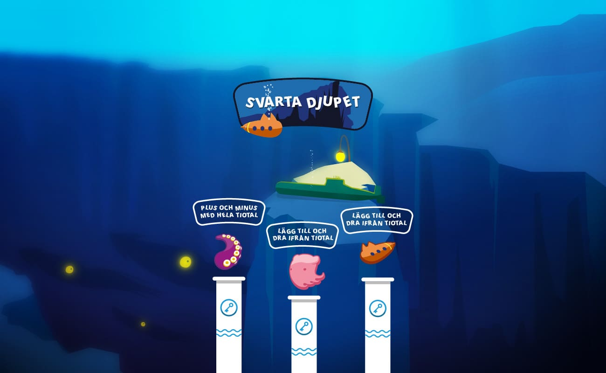
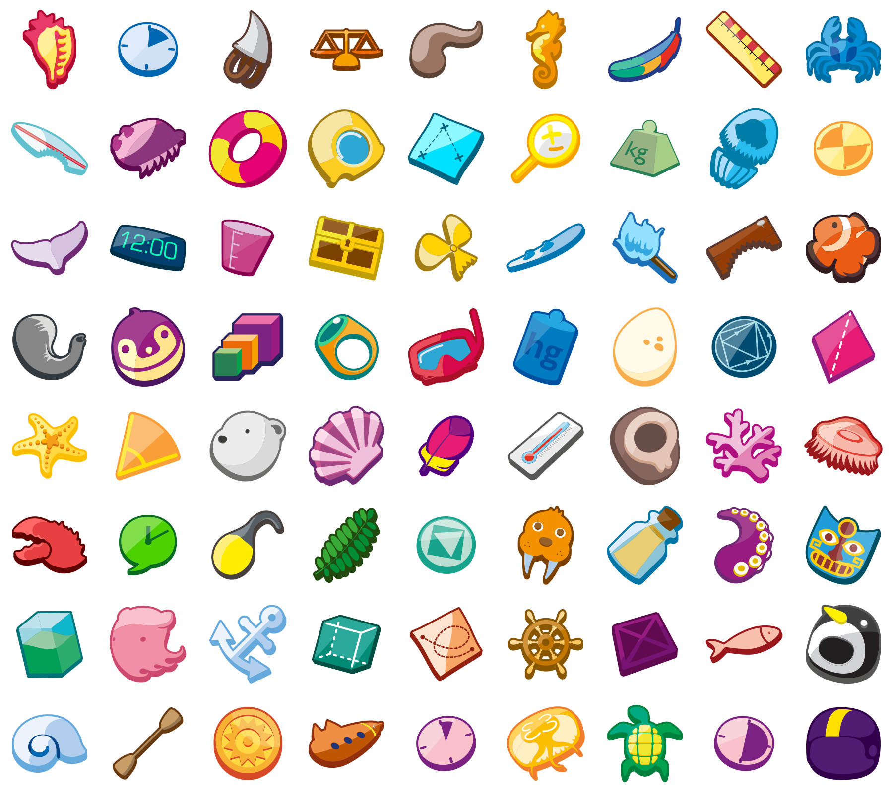
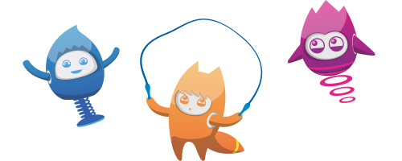
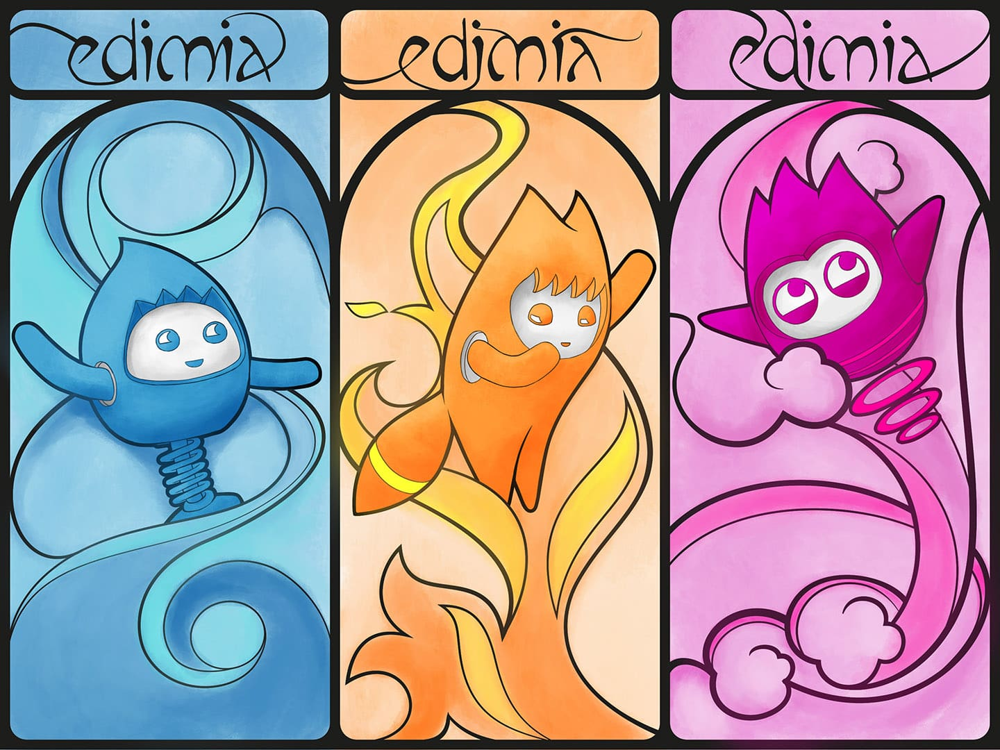
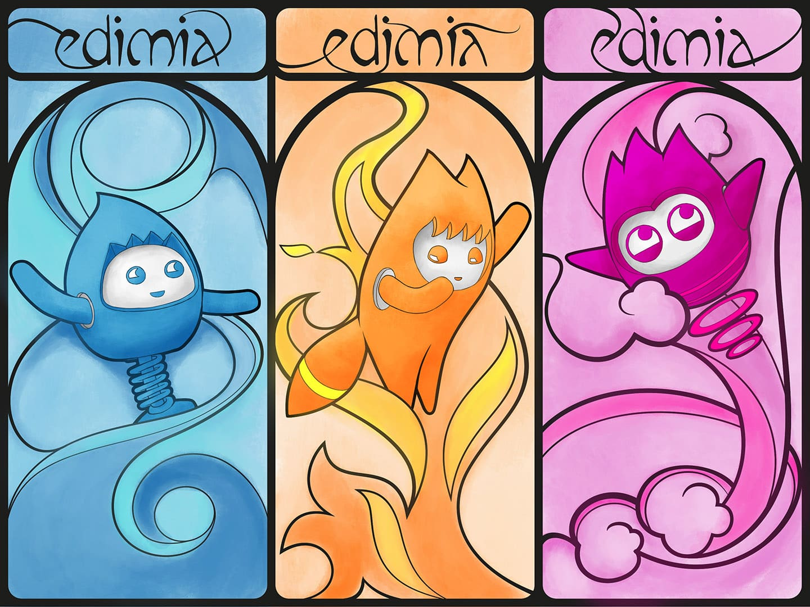
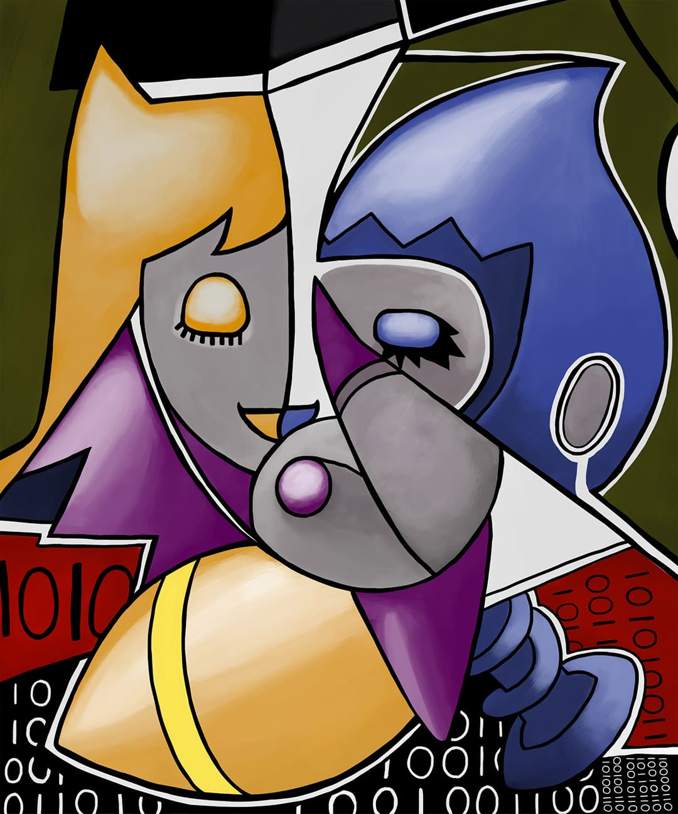
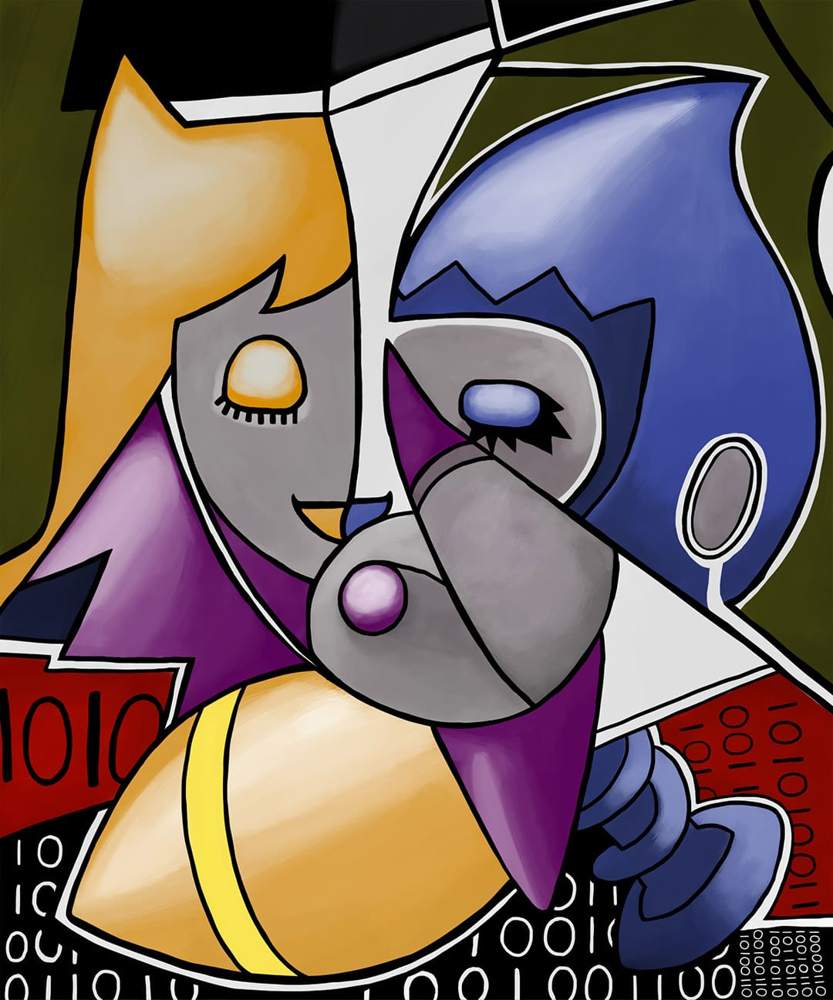

Upptäck Mera Matte
Edimia • Product Design • Assets • Character Design • 2016
Product Design
Upptäck Mera Matte (Discover More Maths) focuses on gamifying mathematics learning. Three characters - Nano, Milli, and Multi - guide students on their journey to discovering math all around them while traveling to exotic places. The exercises themselves are interactive, optimized for desktop and tablet, and make use of drag-and-drop interactions. Beyond pedagogy, visuals were a key part of the product. I created multiple journey themes and designed assets that serve as rewards for students’ achievements.

Example of a module overview
Assets
These “badges” are awarded as students complete modules in their learning path. I aimed to make them stylistic and playful, with a bright, cheerful color palette.
Character Design
Nano • Milli • Multi
Inside Upptäck Mera Matte, we follow three alien robots - Nano, Milli, and Multi - exploring mathematics on the foreign planet Earth. Their curiosity forms the pedagogical foundation for presenting mathematical concepts. I designed the characters to be friendly, with simple yet expressive features that are versatile and easy to manipulate graphically. Their designs are based on the CMYK color space, representing fire, water, and air, while the points on their heads reference the numbers one, two, and three.
Artwork
 

 
